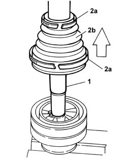
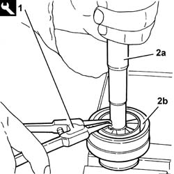

2710A54 l/h or r/h wheel end constant velocity joint (one) - r + r with drive shaft removed - including boot replacement
- Path
- Procedures > 27 AXLE > 2710 FRONT AXLE > 2710A drive shafts and joints > 2710A54 l/h or r/h wheel end constant velocity joint (one) - r + r with drive shaft removed - including boot replacement
- Kind
- repair procedure (removal / refitting; the operation number is the code)
- Applies to
- all engines; all production periods
- Interactive page
- https://sloeber94.github.io/elrnDB-fPnd/en/#/2752703
Applies to: all engines; all production periods
 Removing
Removing
 Refitting
Refitting1. Position the driveshaft in a vice.
2. Remove the bands (2a) for the wheel side constant velocity joint boot (2b) and move it.

Applies to: all engines; all production periods
1. Remove the driveshaft circlip using the tool.
 | Name | Country |
|---|---|---|
- | Caliper | 1.881.124.000 |
2. Release the driveshaft (2a) from the constant velocity joint (2b).

Applies to: all engines; all production periods
Release the constant velocity joint boot from the driveshaft.
Applies to: all engines; all production periods
Refitting
RemovingFit the constant velocity joint boot bands on the driveshaft.
Fit the constant velocity joint boot on the driveshaft.
Fit the driveshaft in the constant velocity joint.
Fit the driveshaft circlip using the tool.
| Name | Country |
|---|---|---|
- | Caliper | 1.881.124.000 |
Fill both the boot and the constant velocity joint with grease.
 | Type | Component | Name | Qty. |
|---|---|---|---|---|
- | Grease (g) | WHEEL END CONSTANT VELOCITY JOINT | TUTELA STAR 500 | 80 |
Reposition the constant velocity joint boot and tighten the bands.
Remove the driveshaft from the vice.